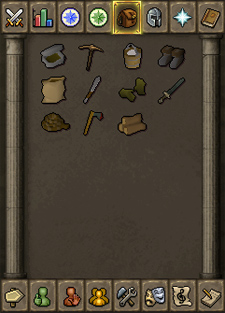
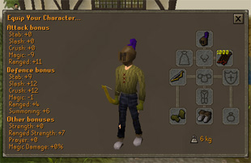
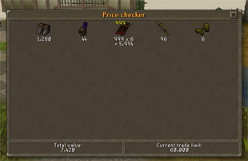

")
Controls - Inventory
Introduction
Your inventory is split into two to make managing your items simpler.
They are:
- Backpack inventory
- Equipped inventory
The backpack inventory section has 28 slots available for items; the equipped inventory section has 11 separate spaces for clothes and weapons and other adornments.
All together this gives you a grand total of 39 slots to use.
Backpack Inventory
Whenever you pick up or purchase an item, it will be added to your inventory, into the backpack.

Large items will take up one inventory slot each. Small items such as money can all be stored in just one slot, in which case a number at the top left of the slot indicates how many of that item are currently grouped together.
You can arrange the items in the inventory by clicking and holding down the "action" button over the item and dragging it to the spot in your inventory you want to move it to. The action button is the left mouse button on a multiple button mouse and the single button on a mouse with only one button.
When you want to interact with the items in your inventory, move the mouse pointer over the item, then click on the left mouse button if you are using a multiple button mouse or click the single button on a mouse with one button, to perform the default action associated with the item. Most of the time the default action will be the 'Use' command.
Once you have done this, you then need to click on the target item, either in your inventory or in the game window.

Once the menu is displayed, you can then select other commands such as “Drop”, “Examine" etc.
If you choose to drop an item, it will appear at your feet. If the item's market value is 3,000 coins or less, other players will be able to see it and pick it up after one minute. You may only leave drops for other players to pick up with a total value of 3,000 coins or less in any fifteen-minute period, any other items you drop will not become visible to other players. Note that a stack of items (30 rune arrows, for example) worth more than 3,000 coins will never appear for other players. The amount you drop that becomes visible to other players is constantly recalculated, but will never exceed 3,000 coins.
Equipped Inventory

Armour and weapons are an important aspect of the game. The weaponry you are wielding can often make the difference between winning and losing a battle. To wield a weapon, go to your inventory screen and click on the item that you wish to wield. If the item can be worn it will then move to your equipment screen.
Separate slots show what you are carrying on your person at any time. To remove an item, left click on it or right-click on the slot you wish to change, and select 'Remove' from the list.
The 'Show Equipment Stats' button at the bottom of this interface will bring up a screen showing what you are wearing and all of the bonuses and modifiers to your combat statistics. In the 'Attack' section, you are shown what bonuses are applied to each attack style.
The 'Price Checker' button will bring up a window that will automatically find the current Grand Exchange price for items in your inventory.
The 'Show Items Kept on Death' button will bring up an interface showing how many items you will keep when you die under your current circumstances, as well as which ones will be protected.

For example, you may see that your metal plate armour offers you good protection against stab and slash attacks, but will be less useful against crushing attacks, and will actually impede your spell-casting if you attempt to fight with Magic.

If you want to check the price of any items you are wearing, you will need to remove them. You will also note that the interface tells you your trade limit, as well as the combined price of all of the items you are checking.
Note that untradeable items have no market value, and so cannot be added to the interface.

On the left side will be a list of all of the items you are wearing, wielding or carrying in your inventory. Those listed above the line are your most valuable and will not be dropped when you die. These items are chosen based on their alchemy value (i.e. the number of coins you get for casting an alchemy spell on them), not the market value. You will also see some information explaining the value of all of the items you are carrying and the value you are 'risking'. On PvP worlds, your risked wealth value will be coloured green if you are risking enough to be eligible for a good drop.

More articles in
Controls
|
|
|
Further Help
If this article does not help you, you may find the following sections of the RuneScape site helpful:
|
|